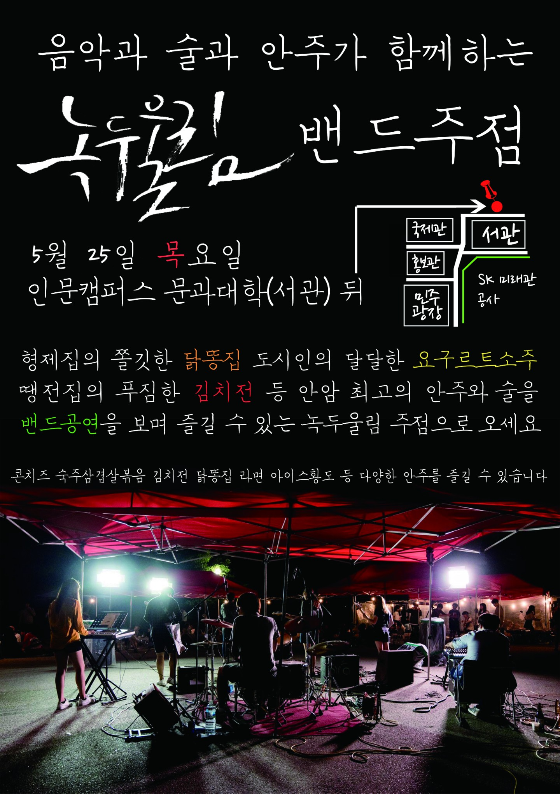

~ Monthly ~
2017.01
2017.02
2017.03

2017.04
2017.05

2017.06
2017.07

2017.08

^ click to watch
2017.09

^ click to watch
[live performance] 17년도 녹두울림 정기공연 - Nokdoowoolim

^ click to watch
2017.10
2017.11
2017.12
~ Songs Practiced ~
Song 2 - Blur
팬이야 - 자우림
Nobody's Home - Avril Lavigne
Holiday - Greenday
Boyfriend - Ashlee Simpson
Tik Tok - Ke$ha
Wild and Young - 강승윤
미스코리아 - 이효리
행운을 빌어요 - 페퍼톤즈
있잖아 - 아이유(IU)
Shade - 브로큰 발렌타인(Broken Vallentine)